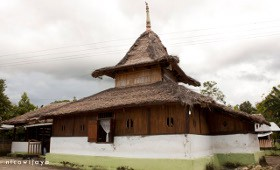

(Masjid Tua)
Masjid Wapauwe merupakan salah satu situs Islam paling bersejarah di Indonesia Timur. Arsitekturnya yang sederhana dengan atap tumpang dua dan bahan baku kayu melambangkan tradisi lokal. Di dalamnya, tersimpan Al-Quran tulis tangan tertua di Maluku, menunjukkan akar Islam yang kuat dan damai di wilayah ini.